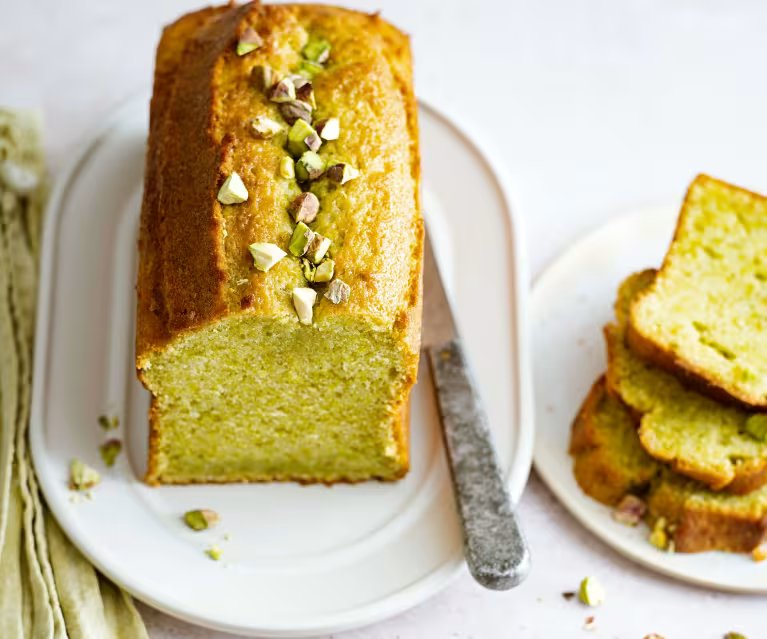

Cake pistache et fleur d'oranger
Ingrédients
6×
- 100 g de pistaches non salées
- 3 oeufs
- 180 g de sucre
- 2 c. à s. d'eau de fleur d'oranger
- 120 g de beurre fondu
- 1 yaourt nature
- 150 g de farine
- 1 c. à c. de levure chimique
- 30 g d'eau
- 0.5 c. à c. d'eau de fleur d'oranger

Préparation
Étape 1
Préchauffer le four à 170ºC. Mettre 100 g de pistaches non salées dans le bol et pulvériser 6 sec/vitesse 10. Réserver.
Étape 2
Mettre 3 oeufs, 150 g de sucre et 2 c. à s. d'eau de fleur d'oranger, mélanger 15 sec/vitesse 4. Ajouter 120 g de beurre fondu et 1 yaourt nature, mélanger 15 sec/vitesse 4.
Étape 3
Ajouter 150 g de farine, 1 c. à c. de levure chimique et la poudre de pistaches, mélanger 20 sec/vitesse 4. Verser dans un moule à cake beurré et chemisé, enfourner 45 à 50min.
Étape 4
Pendant la cuisson, porter à ébullition 30 g d'eau avec 30 g de sucre. Laisser tiédir, ajouter 0.5 c. à c. d'eau de fleur d'oranger et laisser refroidir.
Étape 5
Démouler le cake encore chaud et l’imbiber de sirop au pinceau. Décorer de pistaches concassées.
Conseils
- Le sirop est facultatif.
Résumé
100 g de pistaches non salées
Préchauffer 170ºC pulvériser 6 sec/vitesse 10
3 oeufs
150 g de sucre
2 c. à s. d'eau de fleur d'oranger
120 g de beurre fondu
1 yaourt nature
mélanger 15 sec/vitesse 4 mélanger 15 sec/vitesse 4
150 g de farine
1 c. à c. de levure chimique
mélanger 20 sec/vitesse 4 enfourner
30 g d'eau
30 g de sucre
0.5 c. à c. d'eau de fleur d'oranger
porter à ébullition
imbiber de sirop